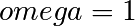
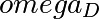

4. Systèmes dynamiques : utilisation de SciPy¶
Contenu du chapitre
- Présentation du module SciPy
- Réalisation de traitements de données avancés avec SciPy
- Génération de figures avancées avec Matplotlib
- Ecrire la documentation d’une fonction
On trouve dans le module ScipPy les opérations de manipulation / traitement de données numériques classiques, mais spécifiques à un type d’application (algébre linéaire, statistiques, etc.). Il s’agit d’un module stable, bien testé et relativement bien documenté.
http://docs.scipy.org/doc/ http://docs.scipy.org/doc/scipy/reference/
>>> import scipy
Le module SciPy réalise les différentes opérations sur des tableaux numériques (ndarray) de numpy. On peut donc directement utiliser ces tableaux comme arguments pour les différentes fonctions
>>> from scipy import linalg
>>> mat = np.array([[1, 2], [2, 4]])
>>> mat
array([[1, 2],
[2, 4]])
>>> linalg.det(mat)
0.0
Pour montrer l’utilisation de SciPy, nous allons nous intéresser à l’intégration d’équations différentielles, en considérant de systèmes dynamiques à base de pendules mécaniques.
4.1. Pendule simple¶
L’équation du pendule simple (faire figure) est donnée par

(expliquer)
Pour les petites oscillations on peut faire l’approximation
 . Quand l’approximation n’est pas valide il
faut intégrer numériquement cette équation différentielle pour obtenir
l’évolution de la position et de la vitesse angulaire du pendule, au
cours du temps.
. Quand l’approximation n’est pas valide il
faut intégrer numériquement cette équation différentielle pour obtenir
l’évolution de la position et de la vitesse angulaire du pendule, au
cours du temps.
Il nous faut donc disposer d’un intégrateur d’équations différentielles, que l’on peut s’attendre à trouver dans SciPy. Mais quelle est la fonction correspondante ? Tentont une recherche Google “scipy integrate differential equation”, ou la consultation du sommaire de l’aide http://docs.scipy.org/doc/scipy/reference/index.html. Il existe un sous-module integrate, qui contient lui-même une fonction odeint
from scipy.integrate import odeint
Regarder la doc de la fonction http://docs.scipy.org/doc/scipy/reference/generated/scipy.integrate.odeint.html#scipy.integrate.odeint et l’exemple http://docs.scipy.org/doc/scipy/reference/tutorial/integrate.html#ordinary-differential-equations-odeint
Pour commencer, il faut mettre l’équation différentielle du 2nd ordre sous la forme d’un système d’équations du premier ordre
def simple_pendulum(theta_thetadot, t):
theta, theta_dot = theta_thetadot
return [theta_dot, - np.sin(theta)]
correspondant à

Nous pouvons maintenant intégrer une trajectoire à partir d’une condition initiale
>>> t = np.linspace(0, 5 * np.pi, 1000)
>>> sol = odeint(simple_pendulum, (np.pi/3, 0), t)
Nous pouvons par exemple vérifier la conservation de l’énergie mécanique au cours du temps :

Pour générer la figure ci-dessous, on a utilisé un certain nombre de commandes du module matplotlib.
Pour construire les différents éléments de la figure (courbe, labels, légende, etc.), il existe des fonctions dédiées de matplotlib qu’on peut “découvrir” grâce à la documentation de matplotlib http://matplotlib.org/. En particulier, la gallerie d’exemples http://matplotlib.org/gallery.html est très utile pour voir comment générer différents types de figures.
4.2. Pendule forcé¶
On peut rajouter un degré de liberté au système dynamique du pendule en imposant un forçage dépendant du temps, par exemple périodique en temps. Nous allons également considérer un amortissement du pendule dû au frottement de l’air. On considère alors l’équation suivante pour le pendule forcé

Comme auparavant, on normalise le temps en fixant . Il reste alors trois paramètre sur lesquels on peut jouer : A, q et . On définit donc une nouvelle fonction définissant le système dynamique du premier ordre
def forced_pendulum_equations(y, t, q, acc, omega):
theta, theta_dot = y
return [theta_dot, acc * np.sin(omega * t) - \
np.sin(theta) - q * theta_dot]
Par commodité, on va également définir une fonction permettant d’intégrer une trajectoire à partir d’une condition initiale, sur un certain intervalle de temps:
def forced_pendulum(t_end, t_space, theta_init, theta_dot_init=0, q=0.1,
acc=1, omega=1):
t_range = np.arange(0, t_end, t_space)
sol = odeint(forced_pendulum_equations, [theta_init, theta_dot_init],
t_range, args=(q, acc, omega))
return np.vstack((t_range, sol.T))
Il s’agit d’une fonction haut niveau, que l’utilisateur final va souvent manipuler. Pour cela, il est recommandé d’écrire une bonne documentation pour la fonction forced_pendulum. Il existe un standard pour l’écriture de docstrings hérité de NumPy, et documenté sur https://github.com/numpy/numpy/blob/master/doc/HOWTO_DOCUMENT.rst.txt. Les différentes sections sont toujours dans le même ordre, ce qui permet une lecture rapide et efficace de la documentation:
def forced_pendulum(t_end, t_space, theta_init, theta_dot_init=0, q=0.1,
acc=1, omega=1):
"""
Integrate a trajectory for the forced pendulum.
Parameters
----------
t_end : float
Final time of the trajectory (initial time is always 0).
t_space : float
Time_interval between two points of the trajectories
theta_init : float
Initial angular position
theta_dot_init : float, optional
Initial angular velocity (default 0)
q : float, optional
Damping (default 0.1)
acc : float, optional
Amplitude of the forcing (default 1)
omega : float, optional
Pulsation of forcing (default 1)
Returns
-------
t: ndarray of floats
array of times
theta: ndarray of floats
angular positions along the trajectory
theta_dot: ndarray of floats
angular velocities along the trajectory
Notes
-----
This function integrates the equation
.. math::
\ddot{\\theta} + q \dot{\\theta} + \omega^2 \sin\\theta = A \sin
\omega_D t
Examples
--------
>>> t, theta, theta_dot = forced_pendulum(100, 0.1, np.pi/3)
>>> sol = forced_pendulum(100, 0.1, np.pi/3, theta_dot_init=1, acc=1.5)
"""
t_range = np.arange(0, t_end, t_space)
sol = odeint(forced_pendulum_equations, [theta_init, theta_dot_init],
t_range, args=(q, acc, omega))
return np.vstack((t_range, sol.T))